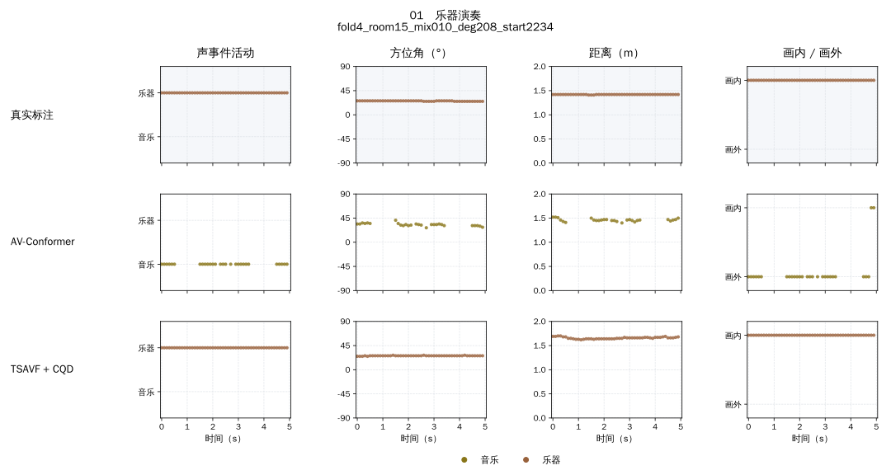
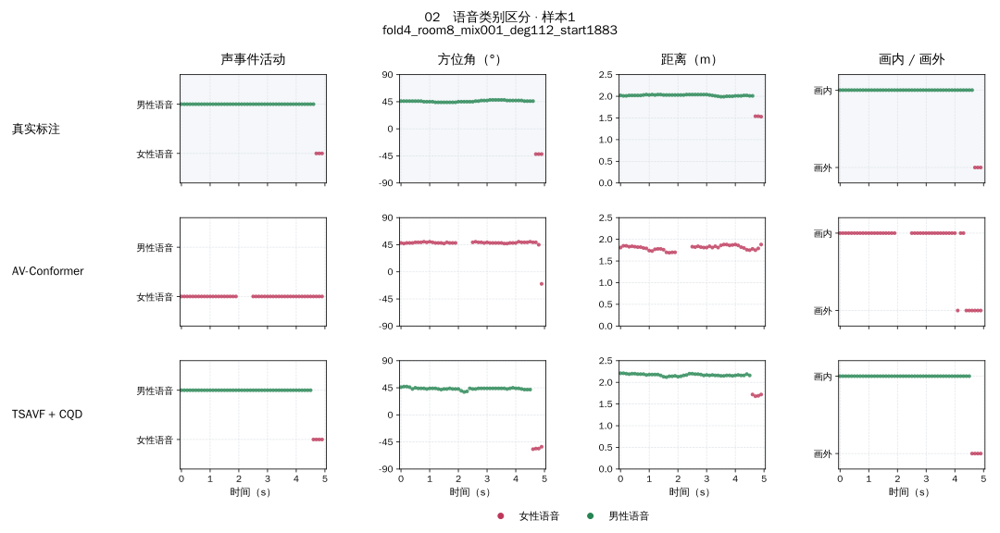
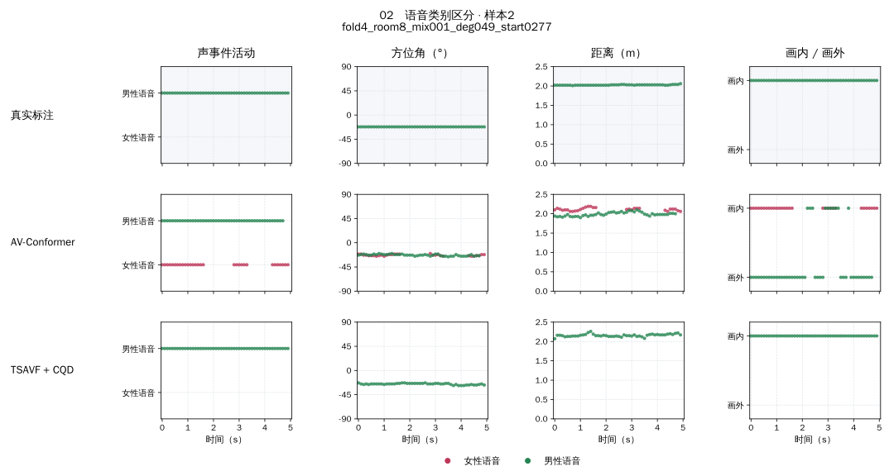
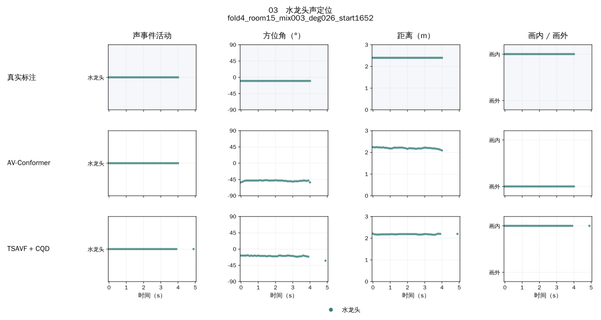
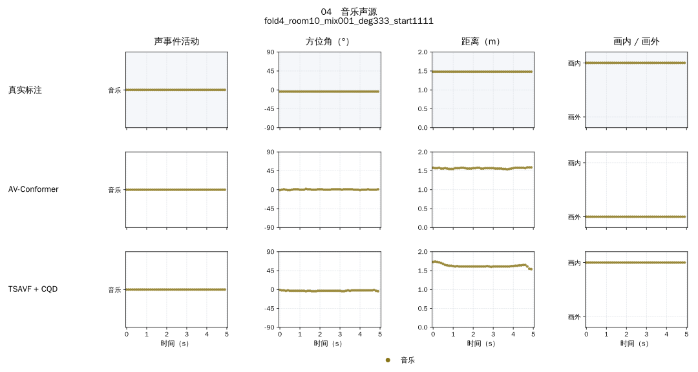
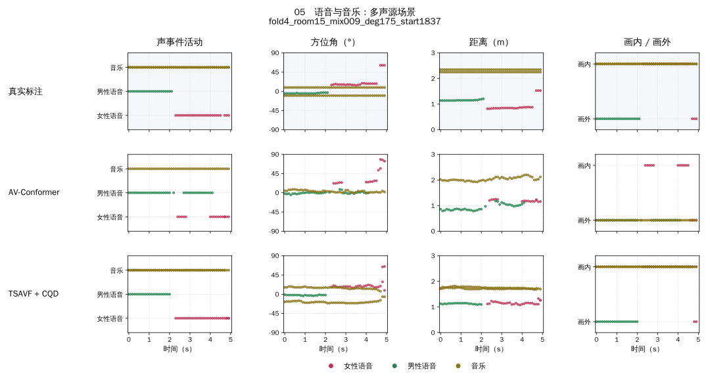
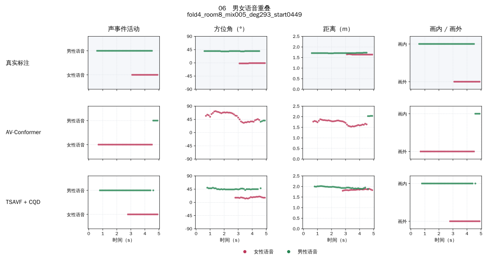
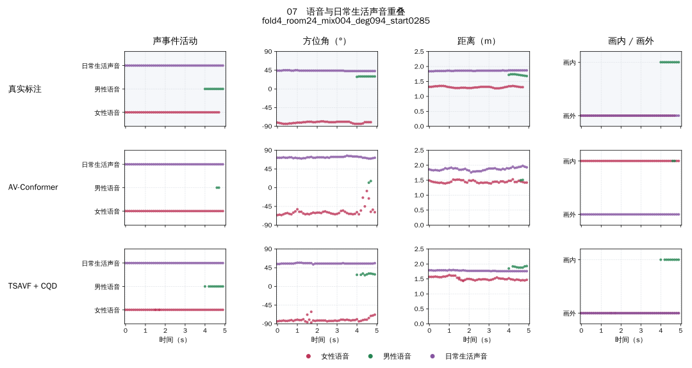
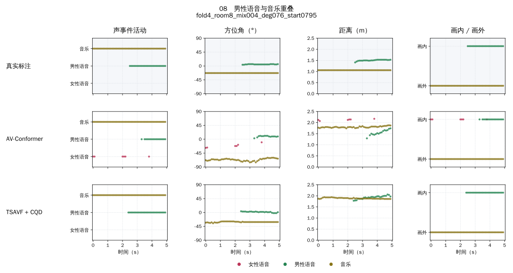

声事件定位与检测：视频实例
基于声源表征增强的声事件定位与检测 · 补充材料
8类场景、9个视听片段。每个样本包含带原始音频的视频，以及真实标注、AV-Conformer和所提方法的分行对比图。
01 乐器演奏
上行：真实标注 ／ 中行：AV-Conformer ／ 下行：所提方法（TSAVF + CQD）

点击图片查看大图；小屏幕可横向滑动图片。下载视频
样本：fold4_room15_mix010_deg208_start2234
02 语音类别区分
样本1
上行：真实标注 ／ 中行：AV-Conformer ／ 下行：所提方法（TSAVF + CQD）

点击图片查看大图；小屏幕可横向滑动图片。下载视频
样本：fold4_room8_mix001_deg112_start1883
样本2
上行：真实标注 ／ 中行：AV-Conformer ／ 下行：所提方法（TSAVF + CQD）

点击图片查看大图；小屏幕可横向滑动图片。下载视频
样本：fold4_room8_mix001_deg049_start0277
03 水龙头声定位
上行：真实标注 ／ 中行：AV-Conformer ／ 下行：所提方法（TSAVF + CQD）

点击图片查看大图；小屏幕可横向滑动图片。下载视频
样本：fold4_room15_mix003_deg026_start1652
04 音乐声源
上行：真实标注 ／ 中行：AV-Conformer ／ 下行：所提方法（TSAVF + CQD）

点击图片查看大图；小屏幕可横向滑动图片。下载视频
样本：fold4_room10_mix001_deg333_start1111
05 语音与音乐：多声源场景
上行：真实标注 ／ 中行：AV-Conformer ／ 下行：所提方法（TSAVF + CQD）

点击图片查看大图；小屏幕可横向滑动图片。下载视频
样本：fold4_room15_mix009_deg175_start1837
06 男女语音重叠
上行：真实标注 ／ 中行：AV-Conformer ／ 下行：所提方法（TSAVF + CQD）

点击图片查看大图；小屏幕可横向滑动图片。下载视频
样本：fold4_room8_mix005_deg293_start0449
07 语音与日常生活声音重叠
上行：真实标注 ／ 中行：AV-Conformer ／ 下行：所提方法（TSAVF + CQD）

点击图片查看大图；小屏幕可横向滑动图片。下载视频
样本：fold4_room24_mix004_deg094_start0285
08 男性语音与音乐重叠
上行：真实标注 ／ 中行：AV-Conformer ／ 下行：所提方法（TSAVF + CQD）

点击图片查看大图；小屏幕可横向滑动图片。下载视频
样本：fold4_room8_mix004_deg076_start0795